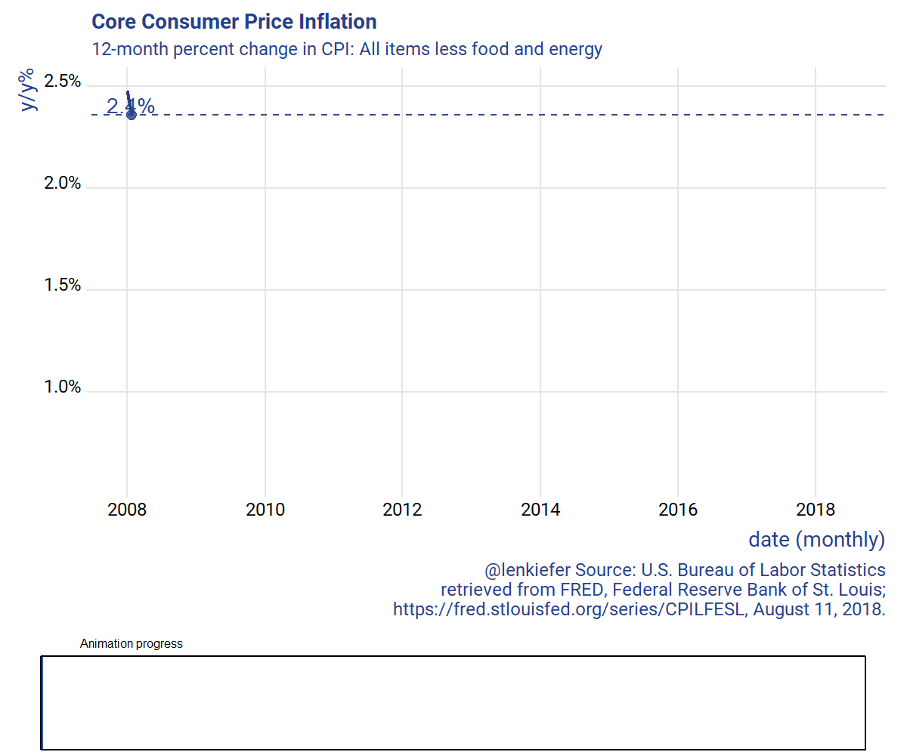

About a year ago I shared code for a dataviz with a progress bar.
Let’s update that R code using gifski and tweener.
The code below will generate this animated gif:

Gif code. Click for details.
# CPI VIz with progress bar----
# set up your directory
mydir <- "PATH_TO_YOUR_DIRECTORY"
# libraries ----
library(data.table)
library(tidyverse)
library(tweenr)
library(gifski)
library(ggridges)
library(extrafont)
library(scales)
library(cowplot)
# make plots ----
# Get data-----
# CPILFESL is FRED mnemonic for CPI: All Items Less Food and Energy
# https://fred.stlouisfed.org/series/CPILFESL
df <- tidyquant::tq_get("CPILFESL", get = "economic.data", from="2000-01-01")
# creat3 12-month inflation rate #
df <- mutate(df,p12=price/lag(price,12)-1)
# prepare for animation
dfp2 <- filter(df,year(date)>2007)%>% mutate(day=1+(row_number()-1)*7, ease="linear")
plot_data_tween<-
tween_elements(dfp2,
time = "day", group="ease",
ease="ease", nframes = nrow(dfp2)*3)
df_tween_appear <- tween_appear(plot_data_tween, time='day', nframes = nrow(dfp2)*3)
N <- max(df_tween_appear$.frame)
# Function for plots -----
make_plot_appear <- function(i, maxi=N){
g.plot <-
ggplot(data=df_tween_appear, aes(x=date,y=p12,label=scales::percent(round(p12,3))))+
geom_line(alpha=0)+
geom_line(data= .%>% filter(.frame==i, .age> -3.5) , color="#27408b",size=1.05) +
geom_text(data= .%>% filter(.frame==i, .age> -3.5) %>% tail(1), size=5, alpha=0.95,,color="#27408b",nudge_y=.0005)+
geom_point(data= .%>% filter(.frame==i, .age> -3.5) %>% tail(1), size=3, alpha=.82,color="#27408b")+
geom_hline(data= .%>% filter(.frame==i, .age> -3.5) %>% tail(1), aes(yintercept=p12),alpha=0.95, linetype=2,color="#27408b")+
theme_ridges(font_family="Roboto")+
scale_y_continuous(labels=scales::percent)+
scale_color_manual(name="",values=c(rgb(103,180,75, maxColorValue = 256),"#f37735","#27408b"))+
theme(text = element_text(color = "#27408b"))+
labs(y="y/y%",x="date (monthly)",
title="Core Consumer Price Inflation",
subtitle="12-month percent change in CPI: All items less food and energy",
caption="@lenkiefer Source: U.S. Bureau of Labor Statistics\nretrieved from FRED, Federal Reserve Bank of St. Louis;\n https://fred.stlouisfed.org/series/CPILFESL, August 11, 2018.")
g.progress<-
ggplot(data=data.frame(x="progress",y=i/maxi),
aes(x=x,y=y))+geom_bar(stat="identity",color=NA,fill="#0033a0",alpha=0.82)+
geom_bar(stat="identity", data=data.frame(x="progress",y=1),
color="black",fill=NA)+
theme_void()+scale_y_continuous(limits=c(0,1))+
theme(plot.title=element_text(size=8,hjust=0.1))+
labs(title="Animation progress")+
coord_flip()
plot_grid(g.plot,g.progress, rel_heights=c(5,1),ncol=1)
}
# test function (uncomment)
# make_plot_appear(max(df_tween_appear$.frame))
# write giff ----
gif_file <- save_gif({for (i in seq(1,N)){
g<- make_plot_appear(i)
print(g)
print(paste(i,"out of",N))
}
for (ii in 1:30){
print(g)
print(paste(ii,"out of",30))
}
}, gif_file= paste0(mydir,"/cpi_aug2018.gif"),width = 1200, height = 1000, res = 144, delay=1/15)
# setting res to a higher number will increase image resolution (and file size)
# Check it out!
utils::browseURL(gif_file)Note that this code can be easily adapted to your data. Just swap in the variable p12 for your variable in the code above. Season to taste with theme, colors, etc.
Code was originally posted with the wrong label on the chart. I corrected it to indicate the index was for All items less food and energy and not All items less shelter. (2018-08-12).